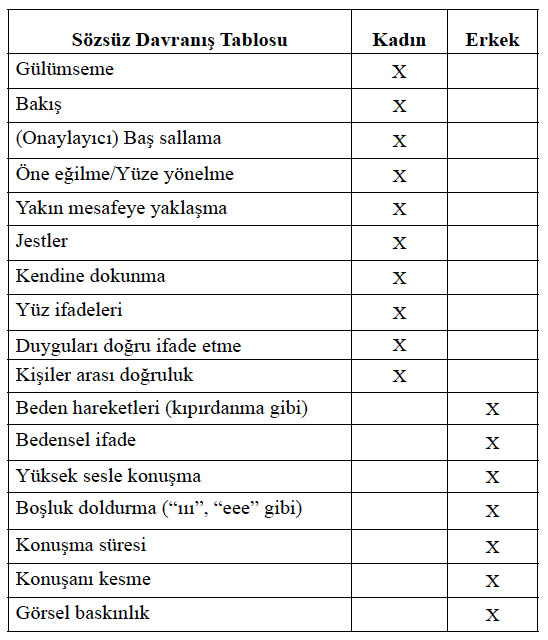

10. BÖLÜM
SÖZSÜZ İŞARETLER
Sözsüz İşaretleri Okuma Becerisi
Hepimiz sosyal olarak aynı hayatı paylaşsak da, olaylara ve kişilere bakışımız, kısacası sosyal yeteneklerimiz aynı olamaz. Bunlar, çok çeşitlilik gösteren becerilerdir. Bazı kişiler, empati kurabilen, sosyal, anlayışlı, cana yakın, iletişim yeteneğine sahip, duygusal zekâya sahip, hassas olarak nitelendirilirken; bazıları ise kapalı, anlayışsız, nemrut, girişken olmayan, tuhaf, geçimsiz gibi sıfatlarla betimlenirler. Bu sözü edilen ifadelerin tamamı, kişinin sosyal yetenekleriyle bağıntılıdır.
Sözsüz iletişimin, sosyal yeteneklerin bir parçası olduğu kesin olarak bilinmektedir.623 Çok sayıda çalışma, sözsüz davranışların sosyal becerilerle ilişkili olduğu hipotezini desteklemektedir.624 Bu bağlamda, sosyal yeterlilik ile başkalarının içdünyalarını sözsüz yüz ifadelerinden anlama becerisi arasında bir ilişki mevcuttur. Sonuçta, sözsüz davranışlar ve bunları çözme becerisi, bireyin genel olarak iletişim becerisine katkıda bulunmaktadır.
Sözsüz iletişim becerileri yüksek olan kişinin kendisinden, bu kitapta aktarılan sözsüz iletişim işaretlerini büyük oranda anlaması; karşısındaki kişinin sözel konuşmasıyla birlikte konuşmadığı ancak, istemli ya da istemsiz olarak ima ettiği konuların farkında olması; kendisinin de yüksek bir doğrulukla sözsüz iletişim mesajlarını kodlayarak karşı tarafa eksiksiz iletebilmesi beklenir.
Önceki bölümlerde, yapılan birçok çalışmanın, bazı duyguların yüz ifadelerinin evrensel olduğu ve tüm kültürlerde benzerlik gösterdiği, dahası evrensel olmayan duyguların da kültürün belli duyguları gösterme kurallarından hareketle o kültürün bireyleri tarafından yüz ifadelerinden anlaşılabileceğini gösterdiği aktarılmıştır.625 Kişiler, bu kültürel kurallar yardımıyla, başkalarına hangi duyguyu ne zaman göstereceklerine karar verirler. Gösterme kurallarını eksiksiz bir şekilde uygulamada başarısız olmak sosyal yetersizliğe neden olurken; bu kuralları doğru tanımak ve anlamını çözmek sosyal etkileşimi kolaylaştırır.626
Sözsüz davranışlar, sosyal etkileşimde önemli bir rol oynamaktadırlar. Başkalarının sözsüz davranışlarını anlamak ya da çözmek, hem başkalarının duygularını anlamayı hem de sosyal etkileşimi kolaylaştırır.627 Sosyal yeterlilik ile başkalarının içdünyalarını yüz ifadelerinden anlamak arasında bir ilişki vardır. Sözsüz davranış, kişinin sosyal yeterliliğine katkıda bulunan birkaç sosyal yetenekten birisi olarak görülebilir.
Duyguları gösterme kuralları, son derece kesin sınırlarla belirlenmiştir. Sosyal hayatta kişiler bazen bu gösterme kurallarından dolayı gerçek duygularını saklamak zorunda kalabilirler. Eş deyişle, mutlu bir an olması beklenen bir durumda, üzüntülü olsa dahi gülümsemesi beklenebilir. Bu yüz ifadesi yalan ve zorlama bir yüz ifadesidir. Buna insanları inandırması gerekir. Aksi halde kişi samimiyetsiz görülecektir. Bu nedenle, kişilerin karşısındakine yalan söylemek olmasa da, onları kandırabilme becerisi, kimi zaman sosyal hayatta gerekli bir beceridir.
Diğer yandan, bu yüz ifadelerinden karşılarındakinin duygu durumunu anlamak da önemli bir sosyal yeterlilik konusudur. Kişi karşısındaki kişinin yüz halinden ve sözsüz iletişim işaretlerinden duygu durumunu anlar ve buna göre hareket ederek davranışlarını düzenlerse “anlayışlı bir arkadaş” olarak görülüp her yerde istenen bir kişi olur. Ancak, kişi eğer karşısındakinin duygu durumunu anlamaz ve durumuna uygun davranmazsa, en basit tanımıyla “patavatsız” olarak kabul edilir ve toplum içinde bir yer sahibi olamaz.
Sözsüz iletişim becerilerinin, çeşitli gruplarla karşılaştırması yapılmıştır. Örneğin, yapılan bir çalışmada Down sendromlu çocukların, normal çocuklara göre sözsüz iletişim becerilerinde eksiklik olduğu tespit edilmiştir.628 Sözsüz iletişim becerisi, sağlıklı ruh halinin işaretlerinden biridir.
Sosyal Yeterlilik ve Yalan Söyleme Becerisi
Bir önceki bölümde yalan konusu anlatılırken, kazancın ve kaybın büyük olduğu, ortaya çıkması halinde ciddi sorunlar çıkarabilecek yalanlardan bahsettim. Bu bölümde yer alan yalanlar ise, farklı bir bakış açısını temsil ediyor. Bu kez bahse konu yalanlar, sosyal hayatı kolaylaştıran, insanlarla daha kolay geçinmeyi sağlayan, beyaz yalanlar ve iltifatlar. Yani aslında hepimizin, her gün başvurduğu yalan türleri.
Yalan Söylemeyeceksin629 adlı romanın kahramanı, yalan söylemeden bir hafta geçirmek üzere, arkadaşlarıyla bir iddiaya giriyor:
“Ben sıradanım. Ve sıradan her insan, yalan söyler. Feragatin ne olduğunu çoktan unutmuş bir toplumda, bir şeyden feragat etmenin ne anlama geldiğini konuştuğumuz bir yazıişleri toplantısı. Çikolatasız, televizyonsuz, cep telefonsuz bir hafta geçirmek gibi, her türlü yaratıcılık ölçeğinde dibe vurabilecek türden son derece sıkıcı öneriler var. Biri ‘yalan söylemeden bir hafta geçirmek’ önerisini atıyor ortaya. Oda birdenbire sessizliğe bürünüyor. Sonra biri gülüyor ve hiç kimsenin yalan söylemeden yaşayamayacağını, böyle bir şeyi denemenin aptallık olacağını söylüyor. Ben bunu deneyeceğim. Yapılan birçok araştırmaya göre insan günde ortalama 200 defa yalan söylediğinden, toplam 1.400 yalandan feragat edeceğim.”630
Bu tür bir iddianın ilk kurbanı, eşiyle ilişkisi olur kahramanın. Doğruyu söyleyeceğim diye sosyal ilişkilerinden vazgeçmek zorunda kalır. Liar Liar631 adlı film de, benzer bir konuyu işlemektedir. Yalan söylemedeki pratikliğiyle ünlü avukat, 24 saat yalan söyleyemeyince, sosyal hayatı ve iş hayatı altüst olur. Yalanın, ne kadar hayatın içerisinde bir kavram olduğu, film boyunca, komik olaylarla işlenir.
Çok resmi bir yemekte olduğunuzu varsayın.632Ev sahibesi çok detaylı bir hazırlık yapmış, neticesinde iyi şeyler duymak istediği belli. Keza siz de yemekler hakkında iyi yorumlar yapmak istiyorsunuz. O da ne, yemeğin tuzu fazla, et de hiç yumuşamamış! Normalde asla yemek istemeyeceğiniz bir yemek. Ev sahibesi yemeği beğenip beğenmediğinizi soruyor. Tam beğendiğinizi söyleyecekken yalan söyleyemiyorsunuz ve yüzüne karşı yemeğin kusurlarını sıralayıp asla yemeyeceğinizi belirtiyorsunuz. Masadaki ortamı bir düşünün, bir yandan da aynı pozisyonda neler hissedebileceğinizi hayal edin. Pek muhtemeldir ki hoş bir ortam oluşmayacak, buz gibi bir hava esecek; sosyal ortam başlamadan bitecektir.
Bir başka örnek de çocuklardan verilebilir. Bir akrabanız, çocuğunuzun doğum gününe geliyor ve çocuğun hiç hoşlanmadığı bir hediye veriyor. Çocuğunuzun yüz ifadesinden hoşlanmadığını ve olumsuz bir yorum yapacağını hissediyorsunuz ve bir göz işaretiyle küçüğü ikaz ediyorsunuz. Çocuk göstermelik bir gülümsemeyle çok beğendiğini söylüyor ve teşekkür ediyor. Muhtemel bir kırgınlığın önüne geçiyor.
Çocuklar, daha henüz sosyal olgunluğa erişmediklerinden, bir başka deyişle sosyal kirlenmeden nasiplerini almadıklarından, yalan söylemeyi ya da nerede yalan söylemeleri gerektiğini bilemezler. Gelen hediyeyi beğenmediklerinde, doğrudan bunu hediyenin sahibine söyleyerek, onu şaşkınlığa uğratabilirler. Karşılaştığınız arkadaşınızla sohbet ederken, “Baba, bu senin, ne kaba adam dediğin amca mı?” diyerek, sizi yerin dibine sokabilirler. Bu tür bir durumda, genellikle, “Çocuktur canım, ne dediğini bilmiyor!” sözleri ve utangaç gülümsemelerle durum toparlanmaya çalışılsa da, sonuçta “Çocuktan al haberi!” tam da bunu anlatan bir deyim olarak dilimize yerleşmiştir.
Olumsuz anlamıyla birlikte, sosyal bir ihtiyaç dahilinde de yalan söylemek zorunda kalıyoruz. Aksi halde çok ciddi sosyal kazalarla karşılaşabiliriz. İkinci örnekte de görüldüğü üzere bu yalanların söylenmesi için çocukluktan itibaren yetiştiriliyoruz. Bu nedenle çok küçük yaşlardan itibaren yalan söylemeye başlıyoruz. Yalan söylemek öğrenilen bir davranış olduğundan ve gelişimsel araştırma, çocukların büyüdükçe yalan algılamalarının arttığını ve aynı paralelde başkalarını daha kolay kandırabildiğini gösterdiğinden,633yetişkin herhangi bir insanın, yalan söylemekte artık ustalaştığı ve duygularının yüzüne yansımasının önüne geçebildiği değerlendirilebilir.
Sosyal yeterlilikleri az ya da çok olarak kategorize edilen iki yaş grubundaki kız ve erkek ergenlerden, iki çeşit içecek içmeleri istenmiştir.634Bu içeceklerden birinin tadı güzel, diğerininki kötüdür. Ergenlerin bazılarından, tadı güzel ve tadı kötü olan içeceklerin tadını beğenip beğenmedikleri konusunda karşılarındaki kişileri ikna etmeleri istenmiştir. Eş deyişle her ergen, bir içecek konusunda, hem doğru söyleyecek, hem de yalan söyleyecektir. Bu ifadeler de, videoya kaydedilerek katılımcılara izlettirilecektir.635Çalışma sonunda, sosyal yeterliliği fazla olan, yani daha sosyal olan ergenlerin yalan söylerken sosyal yeterliliği düşük olan, daha az sosyal ergenlere göre daha başarılı oldukları, inandırıcılıklarının yalan söylerken ya da doğru söylerken eşit olduğu; sosyal yeterliliği düşük olan kişilerin ise kötü yalancılar olduğunu bildirmişlerdir. Aynı çalışmada, yaşı büyük olan ergenlerin, yaşı küçük olan ergenlere göre daha iyi yalancılar oldukları ve duygularını daha fazla kontrol edebildikleri gözlenmiştir. Yani, yaş ilerledikçe, yalan söyleme becerisinde de bir artış gözlenmiştir. Dolayısıyla, kişilerin yaşı büyüdükçe daha fazla sosyalleştikleri (!) ispatlanmıştır. Çalışma, erkeklerin yalan söylemekte kadınlardan daha başarısız olduğunu ortaya koymuştur.636Bu da, kadınların erkeklere göre çok daha sosyal varlıklar olduklarının bir kanıtıdır. Sonuçta, sosyal yeterliliği yüksek olan kişilerin, başkalarını, düşük olan kişilere göre daha iyi kandırabildikleri ya da ikna edebildikleri tespit edilmiştir.
Araştırma sonuçlarını kendi içinizde bir yorumlar mısınız? Neler anlatıyor? Bizim sosyal dediğimiz insanların aslında her duruma uyum sağlayan kişiler olduğu ortaya çıkıyor. Yalan ve sosyal olmak aslında eşanlamlı. Etrafınızdaki kişilere ne kadar oynarsanız, o kadar sosyal kişiler olabileceksiniz. Üzgün olduğunuz halde, duruma göre mutlu görüneceksiniz. Hiç sevmediğiniz birisiyle karşılaştığınızda, sosyal gereklilikten dolayı çok sevinmiş gibi yapacaksınız. Patronun partisi yerlerde sürünecek, ama siz çok eğleniyormuş gibi davranacaksınız.
Çocuklarımıza da sosyal olmak adına öğrettiğimiz aslında yalan söyleyebilme becerisidir. Burada Navarro’nun neden yalan söylemeye sosyal olarak hayatta kalma ya da uyum sağlama aracı dediği de ortaya çıkıyor. Yalan, sosyal hayatta sevilen ve istenilen bir insan olmamızı sağlıyor.
Sözsüz iletişim işaretlerini yeterli kodlama ya da çözme becerisine sahip olmak, başarılı sosyal etkileşimi sağlar.637Yüksek sosyal yeterliliğe sahip kişiler:
Sözsüz İletişim Becerileri ve Cinsiyetler Arası Karşılaştırma
Sözsüz iletişim becerileri alanında yapılan çalışmaların bir kısmı cinsiyetler arası karşılaştırmalara ayrılmıştır.638Bu konuda, bir yargıya varmaya yetecek kadar çalışma ve sonuç vardır. Kadınlar ve erkekler, sözsüz iletişim yetenekleri, bir başka deyişle, sosyal yetenekleri bakımından asla aynı değildir. Yapılan çalışmalar, kadınların sözsüz iletişim yeteneklerinin, erkeklerinkinden daha gelişmiş olduğunu; yani kadınların bu anlamda çok daha becerikli olduğunu ortaya koymuştur.639
Bazı hatalar yapsak da, başka insanların duygu ve yaklaşımlarını çözmekte oldukça iyiyizdir.640Karşımızdaki kişinin üzgün mü, öfkeli mi, kırgın mı yoksa korkmuş mu olduğunu, çoğunlukla o söylemeden anlarız. Başkalarını doğrulukla değerlendirme yeteneği, “kişiler arası hassasiyet” ya da “doğruluk” olarak adlandırılır.641
Sözsüz davranış, sosyal değerlendirmelerde kilit rol oynar. Çünkü sosyal etkileşime girilen kişi hakkında bir bilgi mevcut değilse, sözsüz işaretler önemli bir bilgi kaynağı olur. Herhangi bir zamanda, ilk kez göreceği bir kişiyle etkileşime girecek olan kişi, bu şahsa güvenip güvenmeyeceği gibi hususlara sözsüz işaretlere bakarak girer.
Sözsüz işaretleri doğrulukla okumak, karşımızdakinin duygularını tanımak açısından önemlidir ve bu kişiler arası duyarlılığın önemli bir özelliğidir.642Kişinin, etkileşime girdiği birey tarafından tam bir doğrulukla anlaşılması, o kişiyi rahatlatır. Ancak, yanlış anlaşılma hali etkileşimi, kriz haline dönüştürebilir. Diyalog bir anda, sonu olmayan bir kaosa dönüşebilir ve etkileşimciler kırgın bireyler haline geliverirler.
Karşımızdaki kişiyi doğrulukla algılamakta sözsüz davranış, sözlü davranıştan bile daha fazla önemlidir. O kişinin kendisini anlatmasından çok, bizim onda gördüklerimiz, bizler için çok daha önemlidir. Yapılan bir çalışmada araştırmacılar, katılımcıların, sosyal etkileşimin yazıya dökülmüş hallerinin okunmasından, karşısındaki kişilerin zekâ durumlarını tam bir doğrulukla anlayamadıklarını; ancak, bu katılımcıların video görüntülerini izlediklerinde (sözlerin anlamını anlamaksızın) yaptıkları tahminlerin şans faktöründen daha başarılı olduğunu tespit etmişlerdir.643Yani, karşımızdakini bir görüşte, daha iyi anlayabiliriz.
Başkalarının duygu durumlarını, sosyal hayat içerisinde tahmin etmek ya da anlamak, her zaman için gereklidir. Bu anlamda da, sözsüz davranışları izlemek, hayati bir önem taşır. Eğer, bir insanın düşüncelerini tahmin etmeniz gerekirse, öncelikle sözlü açıklamalarını, konuşmalarını izlemeniz gerekir. Bunun ardından sese ilişkin ipuçları (dil ötesi, paralanguage); son olarak da sözsüz işaretler yardımcı olur. Ancak, birisinin duygularını tahmin etmeniz gerektiğinde, bu sıra tersine döner.644Öncelikle sözsüz işaretlerine, sonra sese ilişkin ipuçlarına bakmalısınız. Sözler, bu kez en son sırada gelir. Çünkü sözler aldatıcıdır. İnsanlar, sözlü olarak istediklerini söyleyebilirler, dilediklerince yalan söyleyebilirler. Ancak, sözsüz iletişime dair işaretlerin doğru okunması, bize kişinin kafasının içerisindekileri, yani gerçek duygularını anlatacaktır.
Kadınlar ve Erkekler Arasındaki Sözsüz Davranış Farkları
Etrafını, bilinçli bir gözle izleyebilen kişiler, kadınlar ve erkekler arasındaki sözsüz iletişim davranışı farklılıklarını, çok net bir şekilde görebilirler: Kadınlar erkeklerden daha fazla gülümserler; etkileşime girdikleri kişiye daha fazla bakarlar; daha fazla (onaylama anlamında) baş sallar ve eğilirler; karşılarındakine daha fazla yaklaşırlar; daha fazla jest yaparlar; kendilerine daha sık dokunurlar; yüz ifadeleri, duygularını ifade etmede daha anlamlıdır ve daha doğrudur.645Diğer yandan, erkekler, daha rahatsız beden hareketleri (kıpırdanma, yerinde oynama) yaparlar; daha yüksek sesle konuşurlar; daha fazla konuşma hataları (kelime tekrarları, unutmaları, dil sürçmeleri, cümle düzeltmeleri, eksik cümleler) ve duraklama dolgusu yaparlar (“eee”, “ııı” gibi).646Kadın ve erkeklerin sözsüz davranışlarına ilişkin genel bir karşılaştırmaya Sözsüz Davranış Tablosu’nda yer verilmiştir.
Kadınlar, başkaları hakkında karar vermekte daha başarılıdırlar ve özellikle duyguları tahmin etmekte çok daha etkilidirler. Dahası, kadınlar, diğerlerinin sözsüz davranışlarını hatırlamakta, erkeklerden daha başarılıdırlar. Hafızaları, son derece güçlüdür. Başkalarının görünümlerini, erkeklerden çok daha iyi hatırlarlar. Tüm bunlar bir arada değerlendirildiğinde, kadınların başkalarını doğrulukla değerlendirmede, erkeklerden daha başarılı oldukları ortadadır.
Bilimsel bir yargı olmasa da; geleneksel bir yaklaşımdan bahsedeceğim. Ülkemizde çok bilinen bir söz vardır. Yeni doğan kız bebek, kendi kendisine konuşurmuş: “Babam beni altı ay evden atmasın, sonra ben kendimi nasıl olsa sevdiririm.” Özellikle kadınlar, bu sözü kendi aralarında çok sık dile getirirler. Gerçekten de, kız çocuklarının, ayrı bir sevimliliği ve cana yakınlığı vardır. Genel olarak, erkek çocukları çok daha çabuk yabanileşir, ele avuca sığmazken, kız çocukları, büyüklerine karşı daha yakın ve sevecendirler. Daha çok küçük yaşlarından itibaren daha sosyal, daha girişkendirler. Bu nedenle daha sevimlidirler.
Kadınlar ve erkekler arasındaki sözsüz davranışları aşağıdaki gibi bir tabloyla verebiliriz:

Cinsiyetler Arası Sözsüz Davranış Farkları. X işareti, hangi sözsüz davranışın, hangi cinsiyet tarafından daha fazla uygulandığını göstermektedir. (Kaynak: Mast ve Sczesny, 2010: 415).
Sözsüz iletişim işaretlerini okuma becerisi, yaşla birlikte artsa da, bu konuda kadınların üstünlüğü bebeklikten çocukluğa ve erişkinliğe kadar devam etmekte, sonrasında bu üstünlük sürüp gitmektedir.647
Kimler Daha Başarılı İşaret Yakalayıcı?
Kitabın bu bölümüne kadar, sizlere sözsüz davranışlarla birlikte sözsüz işaretlerin ne olduğunu; bunların kökenini ve evrimsel geçmişini aktarmaya çalıştım. Peki, bunları kimler daha iyi biliyor, kim daha fazla okumaya yetkin görülüyor? Bir başka bakış açısıyla sorumu yenileyeyim: Kimler sözsüz işaretleri okumaya daha fazla ihtiyaç duyar?
İki tip aile ve bu ailelerde yetişen iki tip çocuk düşünelim. Birinci ailede, ailenin tüm bireyleri her türlü duyguyu rahatça yaşayabiliyorlar. Üzüldüklerinde gerçekten üzülüyorlar; mutlu olduklarında bu duyguyu tam bir coşkuyla yaşıyorlar. Bununla birlikte, yaşadıkları her türlü duyguyu tüm aile bireyleri birbirlerine rahatça anlatabiliyorlar, duygularını özgürce ifade edebiliyorlar. Hem ebeveynler, hem de çocuklar, öfkeli olduklarında bunu açıkça söylüyorlar; sözlü olarak aktarmada bir sorun yaşamıyorlar.
Bir diğer aile türü ise daha ataerkil. Aile içerisinde her türlü duygunun aşırısı tuhaf görülüyor ve hoş karşılanmıyor. Özellikle aile büyüklerinin yanında ne gerçekten üzülmek ne de gerçek anlamda coşkuyla mutlu olmak mümkün. Bunların ifade edilmesi de sık rastlanmıyor. Erkekler ağlamıyor, zaten babanın da ağladığını görebilmek mümkün değil. Toplumun, duyguları gösterme açısından, aileye geçmiş olan son derece belirgin kuralları var ve bu kurallar dahilinde çok kısıtlı olarak duygular ifade edilebiliyor. Sizce, hangi ailenin yetiştirdiği çocuklar daha başarılı işaret okuyucular olurlar?
“Aile, duygu yuvasıdır.”648Çocuklar büyürlerken, her türlü duyguyu evde yaşarlar ve öğrenirler. Bunlar çok çeşitli duygulardır, sıklıkları ve yoğunlukları da bir o kadar çeşitlilik gösterir. Duyguların bir kısmı olumlu; bir kısmı da olumsuz duygulardır. Severler, bağlılık duyarlar, mutlu olurlar; üzülürler, hayal kırıklığına uğrarlar ya da öfkelenirler. Bununla birlikte, bireylerin duygularını en fazla aile ortamında; aile bireylerine karşı açıklamaları beklenir.649Sonuçta insanların, kendilerine en yakın hissettikleri bireylerin aileleri olması beklenir. Anneler kızlarının; babalar oğullarının en yakın sırdaşı olmalıdır. Başı dertte olan aile bireyi, bunu derhal en yakınları olan ailesiyle paylaşmalı ve yardım istemelidir. Fakat bunun her zaman ve her şekilde gerçekleştiği söylenemez ve ataerkil bir aile tarzından gelen biz Türkler, bu gerçeği en fazla bilen milletlerdeniz, öyle değil mi?
Ataerkil aile kültürü, bizde ve Doğu toplumlarında yaygın görülmekle birlikte; herhangi bir toplumda da görülebilecek bir aile yapısıdır. Ataerkil ailelerde ve bunun sonucu olarak bu tür toplumlarda, duyguları yaşamak ve açıklamak belli kurallara tabidir ve sınırlıdır. Ataerkil ve geleneksel aile yapısında kurallar katıdır. Genel olarak her konuda son söz babaya aittir. Çocukların ve sıklıkla eşlerin kendi fikirlerini ve duygularını açıklıkla ifade etmeleri bazen yadırganabilir ve hatta yasaklanabilir. Herhangi bir şey için babadan izin almak gerekir. Bunun için babanın “iyi bir anı, keyfinin yerine gelmesi” kollanır. Bu nedenle aile fertleri babanın yüzünden ruh halini okumaya çalışırlar. Genel olarak kimse duygularını rahatlıkla ifade edemez. Çoğunlukla evde babanın kendi babası veya annesi de yaşar. O zaman durum daha da içinden çıkılmaz bir hal alır. Onların yanında çocuklar ve eş sevilmez ya da azarlanmaz. Baba ya da anne bir bakışıyla çocuklarına bir şeyi yapmaları ya da yapmamaları konusunda işaret verebilir.650
Aile yapısının duyguları özgürce yaşamaya ve açıklamaya uygun olup olmaması ile bu aileden yetişen çocukların bu anlamdaki yetişme tarzları arasındaki ilişki çeşitli araştırmalarla sorgulanmıştır.651Genel sonuçlar değerlendirildiğinde, duyguların rahatça sözel olarak açıklandığı ailelerde yetişen çocukların kendilerinin de duygularını rahatça açıkladıkları görülmüştür.652Bu tür aileler, sözel yönü ağır basan ailelerdir. Bu ailelerde Kişiler Arası Duyarlılık (KAD), yani insanlar söylemediği halde onların duygularını fark edebilme yeteneği düşüktür, yani duyguların yeterince ifade edilmediği ailelerden gelmek yüksek KAD ile doğru orantılıdır.653Ergenler ve gençler üzerinde yapılan araştırmaların genel bir tekrarı, duyguların rahatça açıklanmadığı ailelerde yetişenlerin; duyguların rahatça açıklandığı ailelerden gelen çocuklara göre, yüz ifadelerinden sözsüz işaretler yardımıyla duyguları daha doğrulukla anladıkları tespit edilmiştir.654
Buradan ne anlaşılması gerekir? İki tip aileden bahsetmiştik. İkinci tip, yani duyguların rahatça yaşanarak ifade edilebildiği ailelerde yetişen bireylerin, yaşamlarını sorunsuz sürdürebilmek için sözsüz iletişim işaretlerini çok fazla bilmelerine ya da okumalarına ihtiyaçları yoktur. Sonuçta bu ailelerde, insanlar sözlü olarak sorunlarını halledebilirler. Âşık iseler bunu net bir şekilde ifade edebilir, aileleriyle bu konuyu rahatça paylaşarak tartışabilir ve hatta erkek arkadaşlarını aileleriyle tanışmak üzere eve bile getirebilirler. O ailelerin çocukları, babalarından bir şey istemek için onun iyi gününü yakalamaya çalışmak ve yüzüne bakarak onun ruh hali hakkında fikir yürütmek zorunda değillerdir. Duygular birçok kanaldan rahatça ifade edilebilir, bu nedenle aile bireylerinin duygu ve düşüncelerini anlamak için, sözsüz davranışları ve yüz ifadelerinden anlam çıkarmaya çalışmak zorunda kalmazlar.
Diğer yandan, duygu ve düşüncelerin özgürce ifade edilmediği ailelerde yetişen çocuklar; aileleriyle ilişki kurabilmek için, sözsüz işaretlere daha fazla dayanmak zorundadırlar. Bu ailenin çocukları için, babanın eşref saatini (!) yakalamak daha önemlidir. Baba, günü iyi de geçse, kötü de geçse, bunu açıklamak zorunda değildir. Yemeğini yer ve fazla konuşmadan televizyon seyreder. Eski Çerkes geleneklerine göre, gelin aile büyükleriyle birlikte yemek yiyemez ve uzun yıllar boyu gerekmedikçe konuşamaz. Ataerkil aile yapısının baskın olduğu Anadolu’da, birtakım duyguların sözle ifadesi imkânsızdır. Bu nedenle, şu anda bize komik gelen birtakım sözsüz işaretlerle, talepler iletilir. Evlenmek isteyen genç erkek, pilav tenceresine kaşığını saplar. Aynı şekilde evlenmek isteyen kız evladı, babasının ayakkabısını kapı eşiğine çiviler. Anadolu kilimlerinin her bir figürünün ve her rengin sembolik ve dile getirilemeyen bir anlamı vardır. Anadolu kiliminde mavi ümit; yeşil murat, yani arzu; kırmızı tutkulu sevgi; mor keder; beyaz ya da siyah renk matem anlamlarına gelir.655
“Sevdiğine sözü olan bir kilim dokur
Kilimin dilinden ancak anlayan okur
Sırlarımı verdim sana sevgimi verdim
Şu gönlümü kilim yaptım yoluna serdim
Ayıptır günahtır diye
Kilit vurdular dilime
Aşkı dokudum kilime
Anlıyor musun?
Yetinmedim türkü yaktım
Gayrı bu canımdan bıktım
Hani senin olacaktım
Dinliyor musun?”656
Şarkının sözlerinden de anlaşılacağı üzere, ayıp, günah şeklinde birtakım geleneksel engellerle karşılaşan aile bireyi, duygularını anlatmak için de, başkalarının duygularını anlamak için de yeni yöntemler bulmaya çalışacaktır; söylemediklerinden, söylemek istediklerini anlamaya gayret gösterecektir.
Sosyalleşme, duygu ifadesinin derecesi ve şekillendirilmesinde önemli bir etkendir.657Birçok teorisyen, sosyalleşme sürecinin bireyin duygusal ifadesi ve kişiler arası yetenekleri üzerine etkisinin, aile, akran, komşu, kültür ve toplumun da dahil olduğu birçok etkiyle ilgili olduğu konusunda hemfikirdirler. Bir birey iletişim kurma ihtiyaç ve isteğine yönelik girişimlere ilk defa aile içerisinde başvurduğu için aileler, duygu ifadelerinin öğrenilmesinde öncelikli olarak rol almalıdırlar.658Bu anlamda ailenin yapısının çocuğa geçtiği de ortadadır.
Sözsüz iletişim sinyali gönderme ve çözme becerileri arasında negatif bir ilişki vardır.659 Duygularını açıkça ifade ettikleri için aileleri tarafından cezalandırılan bireyler duygu ifadelerini bastırmayı öğrenirler. Muhafazakâr ve duyguların ifadesinin baskı altına alındığı ailelerden gelen çocuklarda duyguları bastırmak, bir süre sonra alışkanlık haline gelmektedir. Türk geleneksel aile yapısında yerini bulan “erkekler ağlamaz” düşüncesi buna bir örnek olarak verilebilir. “Bazı toplumlarda bir erkeğin herkesin önünde ağlaması ciddi bir zaaf olarak görülür. Bu genellikle güçlü bir askeri tarihe sahip ülkelerde söz konusudur; çünkü soğukkanlılığını koruma yaklaşımı erkek onurunun bir gereği sayılır.”660Erkekler de bedenen, kadınlar gibi ağlama becerisine sahiptirler. Gözyaşları ve ağlamaya yetecek duygu durumları vardır. Ancak, ailede erkek çocukların ağlaması o kadar küçük görülür ve baskılanır ki bu erkekte kalıcı bir davranış biçimi haline gelir. Bu nedenle bizler ağlayan erkekleri sıklıkla göremeyiz. Kadınlar rahatça ağlayabilirken erkekler bu özelliklerini zamanla baskı altına almayı öğrenmişlerdir.
Duygu ifadelerini aile baskıları etkilediği için, duyguların yeterince ifade edilemediği ailelerde yetişen bireyler duygularını gösterirken daha dikkatlidirler. Duygu ifadelerine yönelik doğal kısıtlamaları, onları duygu işaretlerini gönderirken daha dikkatli olmaya zorlar, bu nedenle iletişim nettir ancak, ailelerin normları çerçevesinde gerçekleşir. Bu tür ailelerin çocukları duygu ifadelerini kontrol etmeyi öğrenirken bu model ifadeleri ailelerinden almak zorundadırlar. Bu da onları, ifade ve sözsüz davranış okumada usta yapar. Sözsüz iletişim işaretleri bazen konuşmanın mümkün olmadığı durumlarda ortaya çıkar. Bu ailelerde konuşulamayan durum oldukça fazladır. Bu durumda çocuk ister istemez bu sinyalleri öğrenmek zorunda bırakılacaktır. Tam da sosyalleşme süreçlerinin bir sonucu olarak, duyguların ifadesinde sorun olmayan ailelerde yetişen bireylere göre, duyguları çözmede daha becerikli olmak zorundadırlar. Bir şekilde bu bireyler duygularını ifade etmede daha ekonomik davranmak zorundadırlar. Bununla beraber duyguların rahatlıkla ifade edildiği ailelerde yetişen bireyler duygularını her yerde özgürce ifade edebilirler. Bu kişiler ifadelerinin niteliği hakkında çok fazla düşünmek zorunda olmayabilirler ve bu sinyalleri çözme becerisi konusunda kendilerini geliştirmeyebilirler. Bu kişiler doğal ve anlık durumlarda duyguların ifadelerine ilişkin sinyalleri göndermede iyidirler.661
Yukarıda bahsedilen hipotezleri araştırmaya yönelik bir çalışma, bu satırların yazarı tarafından yürütülmüştür.662Oldukça geniş sayılabilecek bir grup üzerinde yapılan bu çalışmada, aile yapıları ve sosyoekonomik düzeyleri ve yaşadıkları şehirler birbirlerinden oldukça farklı iki grup ergen ele alınmıştır. Araştırma, güvenilirlik analizi de dahil olmak üzere toplam 900 öğrenciye yakın bir örneklem grubu üzerinde uygulanmıştır. Araştırmaya katılanların bir bölümünü İstanbul’da yaşayan ve özel bir okula giden, sosyoekonomik ve ailelerinin eğitim düzeyi oldukça yüksek olan ergenler oluşturmaktadır. Diğer grup ise Doğu Anadolu bölgesinde bir il merkezinde yaşayan, ailelerinin sosyoekonomik ve eğitim düzeyi, diğer gruba göre oldukça düşük olan; il merkezindeki devlete ait düz lise ve Anadolu liselerine giden bir grup ergenden oluşmaktadır. Ergenlerin sözsüz iletişim bilgilerini test etmek amacıyla, Profesör Judith A. Hall’a ait “Sözsüz İşaret Bilgisi Testi”663tarafımdan Türkçeye çevrilerek geçerlilik testleri yapılmıştır. Test, kişilerin sözsüz iletişim işaretlerini ne oranda bildiklerini ölçmektedir. Adı geçen test, kitabın sonunda bulunabilir.
Bahse konu araştırma sonunda, yurtdışında yürütülen çalışmalarla da paralellik gösteren, oldukça ilginç sonuçlar elde edilmiştir. Buna göre:
Daha sonra, testten elde edilen puanlar sıralanmış ve ilk 50’ye giren katılımcılar belirlenmiştir. Bunlar genel olarak değerlendirildiğinde, ilk 50’nin 38’ini kız öğrenciler (%76); 12’sini erkek öğrenciler (%24) oluşturmuştur. Burada da kadınların ezici bir üstünlüğü ortaya çıkmıştır. Bu öğrencilerin 45’i (%90) Doğu Anadolu’da; 5’i (%10) İstanbul’da yaşamaktadırlar.
İlk 50’ye giren öğrencilerin annelerinin 42’si (%84) ilköğretim ve benzeri eğitim seviyesine sahiptir. Bunların arasına okuryazar olmayanlar, okuryazarlar, ilköğretimi bitirmeden terk edenler de dahildir. Diğer annelerin 4’ü (%8) lise, 4’ü (%8) üniversite ve benzeri eğitim seviyesindedir. Bu sonuçlara göre ilk 50’ye giren öğrencilerden neredeyse 10 öğrenciden 8’inin annesi ilköğretim mezunudur. Benzer şekilde ilk 50’ye giren öğrencilerden 23’ünün (%46) babası ilköğretim ve benzeri, 20’sinin (%40) babası lise mezunudur. Bu öğrencilerden sadece 7’sinin (%14) babası, üniversite ve benzeri eğitim seviyesine sahiptir.
Araştırmanın sonuçlarından biri, sözsüz işaret bilgisi konusunda kadınların erkeklerden daha başarılı olduğudur. Alınan bu sonuç, genel olarak bu alanda elde edilmiş sonuçlarla da tutarlılık göstermiştir. Kaldı ki, toplumda genel kanı da bu yöndedir. Alınan bu sonuç beklentiler yönünde gerçekleşmiş ve kadınların daha başarılı olduğu görülmüştür. Kadınlar, beyinlerinin duygusal sağ lobunu kullanan bireyler olarak duygusal zekâ ve sosyal yeterlilikte, dolayısıyla sözsüz iletişim işaretlerini görmede daha başarılıdırlar. Doğa kadına kendisiyle birlikte yavrularını koruma görevini de yüklemiştir. Dişi aslan yavrularını korumak ve saklamak zorundadır, yoksa onları ya sırtlanlara ya da çiftleşerek kendi soyunu sürdürmek isteyen erkek aslanlara yem edebilir. Bu nedenle kadın her türlü değişikliği, dostluğu ya da düşmanlığı sezmek zorunda olan varlıktır. Toplumda genel kanı kadınların altıncı hislerinin yoğun olduğu, her olumsuzluğu hissettikleri yönündedir. Oysaki, araştırma sonuçları bizlere altıncı his dediğimiz şeyin aslında kadınların sözsüz iletişim sinyallerini okuma becerisi ya da bu konudaki bilgisi olduğunu göstermektedir.
Araştırma örneklemi iki ayrı şehirden seçilmiştir. Bunlardan büyük grup olan genel liseler ve Anadolu liseleri Doğu Anadolu’daki bir şehir merkezindedir. Özel lise ise İstanbul’dadır. İki grup arasında dramatik farklar vardır. Öncelikle genel liseler sınavsız ve çok düşük bir not ortalamasıyla öğrenci kabul etmektedirler. Genel yapıya bakıldığında öğrencilerin ailelerinin genel olarak eğitim seviyesi ve sosyoekonomik durumunun düşük olduğu görülür. Ankete katılan Anadolu liseleri ise sınavla ve belli not ortalamalarıyla öğrenci almaktadır. Ailelerin sosyoekonomik seviyeleri nispeten yüksek, eğitim durumları daha iyidir. Özel okula ise hem sınavla öğrenci alınmaktadır hem de çocuklarını bu okullarda okutabilmek için ciddi paralar ödemektedirler. Bu nedenle öğrencilerin ailelerinin hem sosyoekonomik durumları üst düzeydedir, hem de ailelerinin eğitim durumları daha iyidir.
Ailelerin eğitim durumlarına bakınca demografik yapı daha fazla ortaya çıkmaktadır. Doğu Anadolu Bölgesi, genel itibariyle batıya göre çok daha muhafazakâr insanların yaşadığı bölgelerdir. Buralardaki aileler ataerkil aile yapısını korur. Ataerkil ve geleneksel aile yapısında kurallar katıdır. Genel olarak her konuda son söz babaya aittir. Çoğunlukla kimse duygularını rahatlıkla ifade edemez.
İstanbul 15 milyonluk bir şehir olarak elbette homojen bir yapı sergilemez. Son derece yoğun göç alan bir şehirdir ve birçok kenar mahallesi veya gecekondu mahallesi göçmendir. En az Doğu ya da Güneydoğu Anadolu Bölgesi’ndeki kadar yoğun bir muhafazakâr yapı korunuyor olabilir. Ancak, burada seçilen marjinal örnekte özel okul öğrencileri çok daha varlıklı, modern ve demokrat bir yapıya sahip ailelere mensupturlar. Sosyoekonomik düzeyleri oldukça iyidir. Çoğunun ailesi muhafazakâr değildir. Bir sorun varsa paylaşılabilir, genel olarak bir iş yapılacaksa baba tek başına karar vermez, aile üyelerinin fikri alınır. Ailede herkes fikrini ve duygularını özgürce ifade edebilir. Kimse kimsenin iyi bir anını kollamak zorunda değildir. Örneğin, doğuda kızlar için bazen cinayet sebebi olabilen erkek arkadaş olayı, buradaki öğrenciler için son derece normal olabilir.
Özetle başkalarıyla kurduğumuz iletişimde sinyal gönderme ve çözmeyle ilgili sözsüz yeteneklerimiz ailenin ifade ortamıyla ilişkilidir. Bu yeteneğin elde edilmesini iyi bir şey olarak kabul edersek, duyguların rahat ifade edildiği ailelerde yetişen bireylerin sözsüz sinyalleri başarılı bir şekilde göndermede avantajlı olduğu; duyguların ifade edilemediği ailelerde yetişenlerin ise bu sözsüz işaretleri başarılı bir şekilde çözmede avantajlı olduğu söylenebilir.664
Sonuç olarak KAD; başkalarının duygularını, karakterlerini ve huylarını sözsüz işaret ve davranışlar yoluyla kavramaktır. Başkalarını anlama; empati, yakınlık, dışadönüklük, vicdan sahibi olma, açıklık, hoşgörü gibi olumlu yaklaşımlarla paralel bir özelliktir. Saldırganlık, utangaçlık, depresiflik gibi olumsuz kişilik özellikleri ise, başkalarını anlamayı zorlaştırmaktadır.665 Genel olarak araştırmalar değerlendirildiğinde, kişileri anlayabilmenin ve onların ruh hallerini, anlık streslerini ya da coşkularını doğru anlamanın önemi ortaya çıkmaktadır. Bunda da yine, kadınlar aslan payını kimseye bırakmamaktadırlar. Tabii bunun ne kadarını kullanacakları, yine kendilerine kalmıştır.
623 Knapp, M. Hall, J. A. (2006). Nonverbal communication in human interaction. 6. baskı. Kanada: Wadsworth, 63.
624 Feldman, R. S., Tomasian, J. C. ve Coats E. J. (1999). Nonverbal deception abilities and adolescents social competence: Adolescents wıth higher social skills are better liars. Journal of Nonverbal Behavior 23(3), 237.
625 Ekman, P. (1982). Emotion in the Human Face. Cambridge: Cambridge University Press; Ekman, P. (1994). Strong evidence for universals in facial expressions: a reply to Russell’s mistaken critique. Psychological Bulletin: 115, 268-287.
626 Feldman, R. S., Tomasian, J. C. ve Coats E. J. (1999). Age., 238.
627 Feldman, R. S., Tomasian, J. C. ve Coats E. J. (1999). Age., 237.
628 Mundy, P., Sigman, M., Kasari, C. ve Yirmiya, N. (1988). Nonverbal communication skills in down syndrome children. Child Development, 59, 235-249, 246.
629 Schmieder, J. (2011). Yalan Söylemeyeceksin. (Roman). Çev. Murat Özbank. İstanbul: Derin Kitap.
630 Yalan Söylemeyeceksin adlı kitabın tanıtım yazısından alınmıştır.
631 Shadyac, T. (1997). Liar, liar (Yalancı, yalancı) Holywood filmi.
632 Akçay, E. (2012). Gerçeğin belirsiz aynaları: Mikro ifadeler. Jandarma Dergisi 134, 30-37
633 DePaulo, B. M., Stone, J. I., & Lassiter, G. D. (1985). Telling ingratiating lies: Effects of target sex and target attractiveness on verbal and nonverbal deceptive success. Journal of Personality and Social Psychology, 48, 1191–1203; Lewis, M. (1993). The development of deception. In M. Lewis & C. Saarni (ed.), Lying and deception in everyday life (pp. 90–105). New York: Guilford Press; Talwar, V. & Lee. K. (2002). Development of lying to conceal a transgression: Children’s control of expressive behaviour during verbal deception. International Journal of Behavioural Development, 26, 437–444; Wilson, A. E., Smith, M. D. & Ross, H. S. (2003). The nature and effects of young children’s lies. Social Development, 12, 21–45.
634 Feldman, R. S., Tomasian, J. C. ve Coats E. J. (1999). Age.
635 Feldman, R. S., Tomasian, J. C. ve Coats E. J. (1999). Age., 243.
636 Feldman, R. S., Tomasian, J. C. ve Coats E. J. (1999). Age., 244.
637 Feldman, R. S., Tomasian, J. C. ve Coats E. J. (1999). Age., 246.
638 Hall J. A. (1984). Nonverbal sex differences. Communication of accuracy and expressive style. Baltimore: John Hopkins University Press; Hall, J. A., Carter, J. D. ve Horgan, T. G. (2000). Gender differences in nonverbal communication of emotion. In Gender and Emotion: Social Psychological Perspectives. Ed. Agneta H. Fischer. Cambridge University Press; LaFrance, M., Hecht, M. A. & Paluck, E. L. (2003). The contingent smile: A meta-analysis of sex differences in smiling. Psychological Bulletin, 129, 305–334; McClure, E. B. (2000). A meta-analytic review of sex differences in facial expression processing and their development in infants, children, and adolescents. Psychological Bulletin, 126, 424–453; McClure, E. B. (2000). A meta-analytic review of sex differences in facial expression processing and their development in infants, children and adolescents. Psychological Bulletin, 126, 424–453’ten akt. Mast, M. S. ve Sczesny, S. (2010). Gender, power, and nonverbal behavior. Handbook of Gender Research in Psychology 2010, 5, 411-425, 411.
639 Hall J. A. (1984). Age. Coats, E. J. (1996). Nonverbal expressions of emotion: Two models o f gender and status differences. Unpublished doctoral dissertation, University of Massachusetts at Amherst’tan akt. Feldman, R. S., Tomasian, J. C. ve Coats E. J. (1999). Age., 247.
640 Mast, M. S. ve Sczesny, S. (2010). Age., 413.
641 Mast, M. S. ve Sczesny, S. (2010). Age., 413.
642 Mast, M. S. ve Sczesny, S. (2010). Age., 413.
643 Murphy, N. A., Hall, J. A. & Colvin, C. R. (2003). Accurate intelligence assessments in social interactions: Mediators and gender effects. Journal of Personality, 71, 465-493.
644 Ickes, W. (1993). Empathie accuracy. Journal of Personality, 61, 587-610; Ickes, W. (2001). Measuring empathie accuracy. In J. A. Hall & F. J. Bernieri (ed.), Interpersonal sensitivity: Theory and measurement (pp. 219-241). Mahwah, NJ: Erlbaum; Ickes, W. (2003). Everyday mind reading: Understanding what other people think and feel. Amherst, NY: Prometheus Books.
645 Hall J. A. (1984). Age. Hall, J. A., Carter, J. D. ve Horgan, T. G. (2000). Age. Hall, J. A. (2006b). Nonverbal behavior, status and gender: How do we understand their relations? Psychology of Women Quarterly, 30, 384-391.
646 Mast, M. S. ve Sczesny, S. (2010). Age., 413.
647 Mast, M. S. ve Sczesny, S. (2010). Age., 414.
648 Halberstadt, A. G., Eaton, K. L. (2002): A meta-analysis of family expressiveness and children’s emotion expressiveness and understanding, Marriage & Family Review, 34:1-2, 35-62, 36.
649 Matsumoto, D., Takeuchi, S., Andayani, S., Kouznetsova, N. & Krupp, D. (1998). The contribution of individualism vs. collectivism to cross-national differences in display rules. Asian Journal of Social Psychology, 1, 147-165’ten akt. Halberstadt, A. G., Eaton, K. L. (2002). Age., 36.
650 Akçay, E. (2012). “Sözsüz İletişim İşaretleri ve Ergenlerde Sözsüz İşaret Bilgisinin Analizi”, yüksek lisans tezi. Anadolu Üniversitesi Sosyal Bilimler Enstitüsü, Nisan, 148.
651 Halberstadt, A. G. (1981). The relationship between family expressiveness and nonverbal communicative behavior. Unpublished doctoral dissertation. The Johns Hopkins University; Halberstadt, A. G. (1983). Family expressiveness styles and nonverbal communication skills. Journal of Nonverbal Behavior, 8, 14-26; Halberstadt, A. G. (1986). Family socialization of emotional expression and nonverbal communication styles and skills. Journal of Personality and Social Psychology, 51, 827-836; Halberstadt, A. G. (1991). Towards an ecology of expressiveness: Family expressiveness in particular and a model in general. In R. S. Feldman & B. Rimé (ed.), Fundamentals in nonverbal behavior (pp. 106-160). Cambridge: Cambridge University Press; Halberstadt, A. G., Crisp, V. W. & Eaton, K. L. (1999). Family expressiveness: A retrospective and new directions for research. In P. Philippot, R. S. Feldman & E. J. Coats (ed.). The social context of nonverbal behavior (pp. 109-155). NY: Cambridge University Press.
652 Halberstadt, A. G., Eaton, K. L. (2002). Age., 37.
653 Hall, J.A., Andrzejewski, S. A., Yopchick, J.E . (2009). Psychosocial correlates of interpersonal sensitivity: A meta-analysis. Journal of Nonverbal Behavior 33: 149-180, 161.
654 Halberstadt, A. G. (1983). Family expressiveness styles and nonverbal communication skills. Journal of Nonverbal Behavior, 8, 14-26; Halberstadt, A. G. (1986). Family socialization of emotional expression and nonverbal communication styles and skills. Journal of Personality and Social Psychology, 51, 827-836; Halberstadt, A. G. & Eaton, K. L. (2002). Socialization of emotion expression and understanding in the family. Marriage and Family Review, 34, 35-62’den akt. Halberstadt, A. G., Dennis, P. A. ve Hess, U. (2011). The influence of family expressiveness, individuals own emotionality and self-expressiveness on perceptions of others facial expressions, Journal of Nonverbal Behavior, 35: 35-50, 36.
655 Gürbüz, H. (2008). Sevdiğine sözü olan bir kilim dokur, blog, http://blog.milliyet.com.tr/sevdigine-sozu-olan-bir-kilim-dokur/Blog/?BlogNo=89420 adresinden 30.09.2012 tarihinde erişilmiştir.
656 Fatih Kısaparmak, “Kilim” şiiri.
657 Buck, R. (1979). Individual differences in nonverbal sending accuracy and electrodermal responding: The externalizing-internalizing dimension. In R. Rosenthal (ed.), Skill in nonverbal communication: Individual differences, 140-170. Cambridge, MA: Oelgeschlager; Izard, C. E. (1971). The face of emotion. New York: Appleton-Century-Crofts; Jones, H. E. (1950). The study of patterns of emotional expression. In M. L. Reymert (ed.), Feelings and emotions, 161-168. New York: McGraw-Hill; Jones, H. E. (1960). The longitudinal method in the study of personality. In I. Iscoe & H. W. Stevenson (ed.), Personality development in children, 3-27. Austin: University of Texas Press’ten akt. Halberstadt, A. G. (1986). Family socialization of emotional expression and nonverbal communication styles and skills. Halberstadt, A. G. (1986). Family socialization of emotional expression and nonverbal communication styles and skills. Journal of Personality and Social Psychology, 51, 827-836, 827.
658 Halberstadt, A. G. (1986). Age., 827.
659 Lanzetta, J. T. ve Kleck, R. E. (1970). Encoding and decoding of nonverbal affect in humans. Journal of Personality and Social Psychology, 16, 12-19’dan akt. Halberstadt, A. G. (1986). Age., 827.
660 Morris, D. (2009). Çıplak Adam (çev. Elhüseyni, N.). İstanbul: NTV Yayınları, 69.
661 Halberstadt, A. G. (1986). Age., 833.
662 Akçay, E. (2012). Age.
663 Rosip, J. C. ve Hall, J. A. (2004). Knowledge of nonverbal cues, gender and nonverbal decoding accuracy. Journal of Nonverbal Behavior, 28, 267-286.
664 Halberstadt, A. G. (1983). Age., 23.
665 Hall, J. A., Andrzejewski, S. A. ve Yopchick, J. E. (2009). Psychosocial correlates of ınterpersonal sensitivity: a meta-analysis, Journal of Nonverbal Behaviour, 33:149-180, 165.